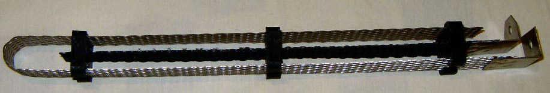

|
Anode current densities used vary widely. They range from 100mA/square cm to 700mA/square cm. Use about 300mA/square cm. Pt will increasingly erode if used in a Chlorate cell with a low concentration of Chloride. Keep above 80 grams per litre Chloride. Pt will also increasingly erode if used in a Perchlorate cell if the concentration of Chlorate is low, though the extra erosion appears to be little.
Do not use Pt with a crude DC supply that has ripple at 50Hz or below because this will encourage wear. 100Hz or greater ripple is OK ((Platinum Metals Rev., 1998, 42, (l), 27-33, available below).
There is some information regarding wear rates of Pt in US Patent No. 3,475,301.
The wear rate of Platinum is 0.5 grams per ton of Chlorine produced when used in Chlorine cells with coating depths of 0.05 to 0.1 mil (Metals handbook).
Platinum wear in a Perchlorate cell has been reported to be from 2 to 7 grams per Ton Na Perchlorate (Kirk-Othmer, PERCHLORIC ACID AND PERCHLORATES).
Pt wire and coins (bullion) is readily available. Platinum
clad Anodes are available from corrosion control companies. Platinum plated (usually Ti) are also available from company's supplying
electroplating supplies. They tend to be expensive considering the amount of Pt that is actually on the Anode. There have been good reports of Platinum plated Ti Anodes being used for Perchlorate production using pure or nearly pure Chlorate. See Alan Yates page for reports on Pt Anodes.
When purchasing Platinum bullion or wire is should be noted what the
ratio of weight to surface area you are getting. If you are going to manipulate the Pt physically after you purchase then this is not so critical. The same goes for Pt clad Anodes, know what surface area you are getting for your buck. You should go for a Pt coating thickness of 70 micron or so.
Platinum clad Anodes are sometimes available which have thicker coats of Pt than the electroplated Anodes.
The Platinum coated Ti Anodes used for electroplating applications have very thin coatings of Pt on them (10 micron or less) but they hold up OK when making Perchlorate from pure or nearly pure (recrystallized at least twice) Chlorate.
|
Another route it to purchase a scrap Pt crucible and make an Anode from that. An example is shown here from Xenoid. Quote: The electrode was made from a "scrap" 15-20 ml. tall form Pt crucible. I used "tinsnips" to cut a spiral 7mm. wide strip around the crucible, starting at the top rim. Obviously the first few cm. of the cut are tapered and this part was tightly twisted and rolled to provide the "lead in" for the main part of the electrode. I cast some epoxy resin around this part using a short length of 6mm. plastic drinking straw as a mold. When I removed the straw (I should have left it in place) there were lots of bubbles in the epoxy and the surface was rough so I covered it with some glue-lined black heat-shrink tubing. This part is fitted through the cell lid using some plastic flanges and couple of "O"-rings. There is a tiny amount of leakage up the centre of the twisted "lead-in" but not enough to cause any problems. The electrode in the image has an overall length of 24 cm. but the length of Pt is longer as it is spiralled. The weight of the original crucibe was about 14 g. and it was about 30 mm. wide at the top and 30 mm. deep. I was amazed how long the strip turned out. The electrode weighs about 11 g. as I did not incorporate the crucible base. The electrode is probably worth about US$450 at current prices as scrap (2011), given that assay, refining and commission needs to be paid.
|
|
An Anode made from a one gram Platinum bullion bar + Valve metal
Below are two Pt clad Anode manufacturers.
http://www.telprocompanies.com
http://www.lidaproducts.com
Pool chlorination anode are sometimes Pt based. The bipolar anodes (AFAIK) are Pt based.
An example at this address: http://www.directpoolsupplies.com.au/prod646.htm
A picture is below. It should be noted that it is not certain if this Anode is MMO or Pt.

.
The ratio of weight (price) to surface area for Pt wire is important from a cash and current carrying point of view.
This is discussed in Resistance and power calculation for Pt wire.
Figures I have seen with people who actually used 0.5mm Pt wire said that 4 amps was the max. current that was sensible to put through wire. I have seen as high as 7 amps. This was far too high IMHO as the wire will get far too hot above the liquid surface.
You can cut a given length of wire into a number of Anodes to lessen the resistance problem if you need, as discussed in link to Resistance and Power calculation.
You could also flatten wire to give it more surface area per buck. Watch out for the current needed to run your new flattened Anode. You cannot flatten the wire too much and expect the wire at the top to be able to carry a huge current. Platinum is very malleable.
With an infinitely flattened wire you will have infinitely large surface area costing an infinitely small price per cm squared, with an infinitely high ................... You need to decide where the sensible point is.
Pt wire can be attached to a Copper wire and sealed in a glass tube to save on Platinum.
A great discovery by 'pdfbq' over on www.amateurpyro.com, is that you can simply join an Anode (all types of Platinum Anode included!) to a piece of Titanium (not grade 5 which contains Aluminium) using a simple rivet or bolt. The joint must be below the surface of the electrolyte for the connection to operate. Search 'pdfbq' for more details on this site and elsewhere.
Beating Platinum coins and wire into a flat shape is easier said than done.
If you use Chromates in your Perchlorate cell this will help protect Pt from corrosion as it stops Chloride from forming. See this thread by GarageChemist(or see Na Perchlorate section):
http://www.sciencemadness.org/talk/viewthread.php?tid=5050&page=2#pid60758
Since Chromates stop Chlorate and Hypochlorite being reduced at the Cathode back into Chloride this will
protect the Pt as Chloride in the Perchlorate cell will corrode Pt.
If using homemade Chlorate, you should recrystallize the
Chlorate at least twice to get the Chloride concentration low and save on Anode erosion.
Persulphate or NaF would probably help protect the Pt as well. They may not.
To quote:
In effect, platinum forms an equilibrium or quasi
equilibrium state when evolving chlorine, and
a rather different state for oxygen evolution.
During co-joint oxygen and chlorine evolution,
which occurs in dilute brine, there is interference
in the formation of surface layers and this
leads to accentuated metal dissolution.(Platinum Metals Rev., 1998, 42, (l), 27-33, available below)
According to Encyclopedia of Chemical Processing and Design, Vol 51, 1995 page146, Barium is a poison to Noble Metal or Noble Metal Oxide Anodes and may even reduce there lifetimes.
Another possible way to make Pt anodes is to use Potters Platinum .
See here for some info on plating Pt onto Titanium.
The price of Platinum in coins is much lower per gram than wire or foil.
You can look up the price of Platinum on the international markets by doing a
search for precious metal dealers/brokers.
Coins can also be bought from
similar sources.
Try the following for Pt wire, coins and Anodes.
There's plenty of further reading regarding Platinum Anodes (and its cousins) in the Platinum Metals review journal.
There is an article depicting the development of the Pt Anode in PMR 1998 (42) 1 (available at above link)
and here (local PDF, 600k).
HIT THE BACK BUTTON ON YOUR BROWSER